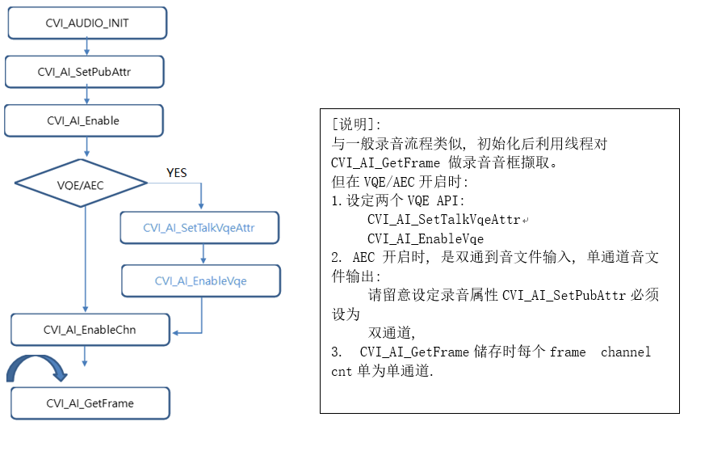

6. Block Diagram:¶
{kind=link}

6.1. code 细部说明：¶
(可参阅cvi_sample_audio.c , case 10; 可参阅cvi_aec_test.c 单元测试流程):
使用者透过CVI_AI_SetTalkVqeAttr, CVI_AI_EnableVqe两只API将VQE功能开启. CVI_AI_SetTalkVqeAttr仅需设定三个参数结构
AUDIO_DEV AiDevId : 收音设备ID, 与CVI_AI_Enable ID需一致
AI_CHN AiCh : 收音设备通道, 与CVI_AI_EnableChn ID需一致
AI_TALKVQE_CONFIG_S *pstVqeConfig,
在AI_TALKVQE_CONFIG_S结构体内会有以下子结构:
CVI_U16 para_client_config;
CVI_U32 u32OpenMask;
CVI_S32 s32WorkSampleRate;
/* Sample Rate: 8KHz/16KHz.default: 8KHz*/
//MIC IN VQE setting
AI_AEC_CONFIG_S stAecCfg;
AUDIO_ANR_CONFIG_S stAnrCfg;
AUDIO_AGC_CONFIG_S stAgcCfg;
AUDIO_DELAY_CONFIG_S stAecDelayCfg;
CVI_S32 s32RevMask;//turn this flag to default 0x11
CVI_S32 para_notch_freq;//user can ignore this flag
CVI_CHAR customize[MAX_AUDIO_VQE_CUSTOMIZE_NAME];
[参数]:
AI_AEC_CONFIG_S stAecCfg;
AUDIO_ANR_CONFIG_S stAnrCfg;
AUDIO_AGC_CONFIG_S stAgcCfg;
上述三个结构体可以设置对应的VQE参数, 并透过u32OpenMask来决定使用这目前VQE需 要什么开关.
s32FrameSample = 160; //每个音框采样数, 为160倍数
s32WorkSampleRate //取样率(仅支持语音采样率8000/16000)
enWorkstate = VQE_WORKSTATE_COMMON;
para_notch_freq = 0; //客制化参数,请设为0
s32RevMask = 0; //客制化设定(客制化参数), 请设为预设为0
customize //客制化屏蔽, 请设为"none"
[开关]:
- ex:
(如需功能全开)
u32OpenMask = LP_AEC_ENABLE |NLP_AES_ENABLE|NR_ENABLE|AGC_ENABLE|DCREMOVER_ENABLE|DG_ENABLE|DELAY_ENABLE
- ex:
(如仅需开启AGC/ANR)
u32OpenMask = (AI_TALKVQE_MASK_AGC)|(AI_TALKVQE_MASK_ANR)
- ex:
(开启AEC/AGC/ANR)
u32OpenMask = (AI_TALKVQE_MASK_AEC)|(AI_TALKVQE_MASK_AGC)|(AI_TALKVQE_MASK_ANR)